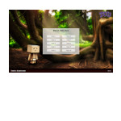
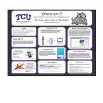

Final Parsec - We're a team of two based in North Texas working on fun projects in our free time. We typically keep a focus on making video games, but we've been known to build robots and invent science fiction universes. Keep an eye on our blog or follow us on social media to see us showing off the latest progress.
GoodNEWS Fort Worth - A mobile application targeting iOS and Android developed for the GoodNEWS program, part of the University of North Texas Health Science Center. The application promotes healthy living in the Fort Worth community, and is paired with a content management system for GoodNEWS employees.
ExploreMuse - A mashup which offered a simple and intuitive way to discover new music. Now defunct due to changes in APIs it relied on. This won 3rd place in the TCU Neeley School of Business' Elevator Pitch Competition.
 Quality App - Created for Texas Christian University and used by the Neeley School of Business, this app facilitates the learning of quality management.
 Where Am I? - A research attempt to improve indoor localization utilizing sensors commonly included in smartphones. This was published as a poster and presented at Midwestern University's North Texas Area Student Conference and TCU's Student Research Symposium.
Hi! I'm Baer, and this is my corner of the internet. This is my place to share my life, my projects, and the things I'm interested in. Stick around if you're into software, finance, and fitness.